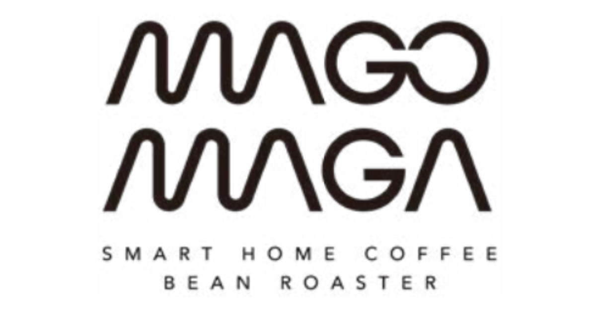

Disclosure: VinceMedia is reader-supported. If you buy through our links, we may earn a commission. These items are sold by the brand's own store — in stock and ready to ship, no crowdfunding risk.

Ready to Ship Kitchen & Coffee
MAGO MAGA — smart home coffee roasting
The Roma Pro is an award-winning countertop roaster that automates the tricky part of home roasting — consistent profiles, repeatable results — for everyone from beginners to coffee nerds.
View MAGO MAGA storeWhat the store is about
Award-winning smart roaster
designed to make consistent roasts easy for beginners and pros alike
Automated profiles
takes the guesswork out of temperature curves and batch timing
Home-scale craft
fresh-roast coffee without building a garage roasting setup
Roma Pro flagship
the current flagship model in the MAGO MAGA home line
Vince's honest take
Perfect for
- Coffee enthusiasts who already grind and brew at home and want the next step: roasting their own beans.
- Beginners who tried hand-roasting once, burned a batch, and want automation instead of a hobby-with-a-curve.
Think twice if
- People happy with good specialty beans from a local roaster — home roasting is a hobby investment, not a cost saver.
- Anyone with limited kitchen counter space and no dedicated coffee corner.
The bottom line
MAGO MAGA sells a genuine, award-winning niche appliance from its own store — the product exists, ships and carries normal retail protections. The real question is whether home roasting is your hobby. If you already nerd out over beans and brew, the Roma Pro removes the last manual barrier; if you just like coffee, keep buying from people who roast professionally.
View MAGO MAGA storePrices and stock are set by the brand's store · affiliate disclosure above.